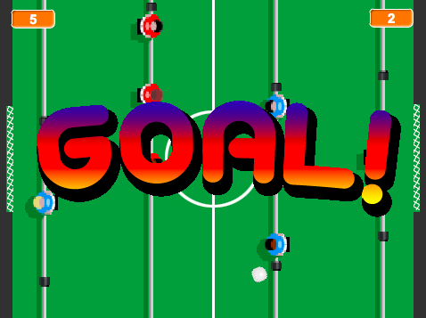

Projecte de contribució de la comunitat
Aquest projecte ha estat possible gràcies a Mark Hardisty (idea i diseny original) i Codeclubcat (traducció, edició i formateig a projecte Code Club).
Introducció
En aquest projecte crearem una copa del món de futbol amb Scratch!

Pas 1: Preparar el terreny de joc
Llista de tasques
- Comenceu un projecte nou de Scratch. Aneu a la finestra personatges Elimineu el gat (premeu el botó dret damunt del gat i llavors esborra . Si aquesta instrucció no funciona, premeu majúscules i apreteu el botó esquerra del ratolí).
- Aneu a l’escenari. Seleccioneu l’opció de
pujar un fons des d'un fitxer. Seleccioneu la imatge pitch de la carpeta de recursos de la pràctica. - Elimineu el fons de color blanc original. Ho podeu fer anant a la pestanya de
Fons. - Les nostres porteries necessiten xarxes!!! Creeu un nou personatge utilitzant
Puja un personatge des d'un fitxer. Seleccioneu la imatge net de la carpeta de recursos. - Mou el personatge que acabes de crear al mig de la porteria del cantó esquerre del terreny de joc.
- Canvia-li el nom al personatge i posa-li el nom de porteria blava.
- Premeu el botó dret del ratolí sobre del personatge i premeu
duplica. Llavors moveu aquest nou personatge al mig de la porteria dreta i canvieu-li el nom per porteria vermella.
Deseu el projecte
Pas 2: Afegir un porter
De moment el terreny de joc té molt bona pinta! Ara toca afegir alguns jugadors i fer que es moguin.
Llista d’activitats
- Creeu un nou personatge prement
Puja un personatge des d'un fitxeri seleccioneu la imatge goalie blue de la carpeta de recursos de la pràctica. Canvieu-li el nom al nou personatge i poseu-li porter blau. - Moveu el personatge fins a situar-lo davant de la porteria esquerre.
- Premeu al botó
creixi després premeu 10 vegades el personatge porter blau fins a fer-lo créixer 10 vegades. Cliqueu la pestanya de
Programesi afegiu el codi següent:
Mireu un moment el programa que heu creat. Primer posem el porter al lloc d’inici i després el bucle per sempre està escoltant tota l’estona fins que un jugador premi la tecla Q o la tecla A. Quan un jugador prem la tecla Q el porter es mourà cap a dalt, i quan premi la tecla A el porter es mourà cap avall. El programa que heu escrit també comprova la posició y perquè el porter no surti de la pantalla (entre la posició y que va de -80 a 80).
Proveu el projecte
Cliqueu la bandera verda.
- Podeu controlar el moviment del porter amb les tecles Q i A?
- Què passa quan el porter toca els límits de la pantalla del joc?
Deseu el projecte
Pas 3: Afegir més jugadors
No podem jugar a un partit de futbol només amb un jugador! Necessitem afegir-ne més.
Llista d’activitats
- Creeu un nou personatge prement
Puja un personatge des d'un fitxeri seleccioneu la imatge goalie red de la carpeta de recursos de la pràctica. - Canvieu-li el nom al nou personatge i poseu-li porter vermell.
- Arrossega el personatge fins que estigui situat davant de la porteria dreta.
- Igual que heu fet abans, cliqueu el botó creix i féu créixer el personatge 10 vegades clicant sobre d’ell 10 cops.
- Arrossegueu el programa del porter blau que heu creat abans sobre el personatge porter vermell per copiar el codi al nou personatge.
Vés al personatge porter vermell i modifica el programa que li has copiat de la manera següent:
Només haureu de canviar dues coses, laposició xi les tecles que hauràs de prémer: “p” i “l”.
Proveu el projecte
Premeu bandera verda.
- Podeu controlar el moviment del porter vermell amb les tecles P i L?
- Encara funcionen les tecles per moure el porter blau?
Deseu el projecte
Pas 4: Afegir jugadors atacants
Llista d’activitats
- Creeu un nou personatge prement
Puja un personatge des d'un fitxeri seleccioneu la imatge attack blue de la carpeta de recursos de la pràctica. - Canvieu-li el nom al nou personatge i poseu-li atacant blau.
- Arrossega el personatge fins que estigui situat davant del porter vermell, a la dreta de la pantalla.
- Igual que heu fet abans, cliqueu el botó creix i féu créixer el personatge 10 vegades clicant sobre d’ell 10 cops.
- Arrossegueu el programa del porter blau que heu creat abans sobre el personatge atacant blau per copiar el codi al nou personatge.
Vés al personatge atacant blau i modifica el programa que li has copiat de la manera següent:
Només haureu de canviar dues coses, laposició xi les tecles que hauràs de prémer: “w” i “s”.- Creeu un nou personatge prement
Puja un personatge des d'un fitxeri seleccioneu la imatge attack red de la carpeta de recursos de la pràctica. - Canvieu-li el nom al nou personatge i poseu-li atacant vermell.
- Arrossega el personatge fins que estigui situat davant del porter blau, a l’esquerre de la pantalla.
- Igual que heu fet abans, cliqueu el botó creix i féu créixer el personatge 10 vegades clicant sobre d’ell 10 cops.
- Arrossegueu el programa del atacant blau que heu creat abans sobre el personatge atacant vermell per copiar el codi al nou personatge.
Vés al personatge atacant vermell i modifica el programa que li has copiat de la manera següent:
Només haureu de canviar dues coses, laposició xi les tecles que hauràs de prémer: “o” i “k”.
Proveu el projecte
Premeu bandera verda.
- Ja teniu dos equips per jugar?
- Per controlar l’equip blau haureu de prémer les tecles Q, A, W, S.
- Per controlar l’equip vermell haureu de prémer les tecles P, L, O, K.
Deseu el projecte
Pas 5: Afegir una pilota que reboti
El nostre joc de futbol té molts peus però cap pilota!! hem d’arreglar-ho.
Llista d’activitats
- Creeu un nou personatge prement
Puja un personatge des d'un fitxeri seleccioneu la imatge ball de la carpeta de recursos de la pràctica. - Canvieu-li el nom al nou personatge i poseu-li pilota.
A la pestanya de
Programesdel personatge pilota, afegeix el codi següent:- Cliqueu sobre del programa amb el botó dret del ratolí i premeu
afegeix un comentari. Afegiu el comentari “rebotar pilota”. Afegiu un altre tros de codi al personatge pilota:
Aquest codi fa que la pilota es posi al mig del camp quan es comença el partit. I després, fa que apunti a una direcció aleatòria. Per què utilitzem el missatge iniciarpilota?
- No oblideu d’afegir el comentari “preparació per començar”, per poder recordar més endavant què fa el nostre tros de codi!
Proveu el projecte
Premeu bandera verda.
- Es mou la pilota?
- Què pasa quan toca les vores de la pantalla?
- Esteu contents amb a velocitat en què es mou? Intenteu modificar el bloc
mou-teper canviar la velocitat de la pilota. Podeu fer que es mogui més ràpid o més lent, configureu-ho al vostre gust! - Què passa quan la pilota toca als jugadors?
Deseu el projecte
Pas 6: Xutar la pilota
Necessitem que la pilota reboti quan toca els peus dels jugadors.
Llista d’activitats
Modifiqueu el programa anterior de la pilota (“rebotar”) per tal de que es vegi així:
Haureu de seleccionar els colors clicant als jugadors de futbol. Aquest canvi al programa fa que la pilota reboti quan toca a algun jugador i que es desvïi uns graus (aleatoris).
Proveu el projecte
Premeu bandera verda.
- Què passa quan la pilota toca als jugadors?
- Funciona pels jugadors dels dos equips (blau i vermell)?
Deseu el projecte
Pas 7: Gooooooool!!!!!!!!
Llista d’activitats
Seleccioneu la porteria vermella i afegiu el següent programa:
Aquest programa funciona com la tecnologia de la línia de gol: funciona tota l’estona, comprovant sempre si està tocant la pilota o no, i quan la porteria toca la pilota envia un missatge de gol a tothom.
- Arrossega aquest programa al personatge porteria blava per copiar el codi a l’altra porteria.
- Ara necessitem fer alguna cosa amb el missatge que envien les porteries quan és gol. Premeu
Puja un personatge des d'un fitxer. - Seleccioneu la imatge goal_text de la carpeta de recursos de la pràctica.
- Poseu el següent nom al personatge: text de gol.
Afegiu el programa següent al personatge text de gol
Finalment afegeix un programa més al personatge text de gol per tal d’assegurar-nos que el missatge de gol s’amaga a l’inici del joc:
Deseu el projecte
Proveu el projecte
Ja teniu el joc apunt per jugar-hi!!!! Premeu bandera verda.
- Què passa quan la pilota comença a moure’s?
- Busca un company per jugar-hi!
Repte 1: Mantenir la puntuació
- Podeu afegir variables que mostrin la puntuació pels dos equips?
Repte 2: Inclinar el futbolí
- A vegades la pilota es queda encallada i comença a rebotar entre dos llocs on els jugadors no arriben per tocar-la i desencallar-la. Podeu afegir un programa que inclini el futbolí quan es premi la tecla espai i que solucioni aquest problema?
Repte 3: El xiulet de l’àrbitre
- Podeu afegir un xiulet de l’àrbitre cada vegada que el joc comenci? podeu utilitzar el so whistle de la carpeta de recursos de la pràctica.